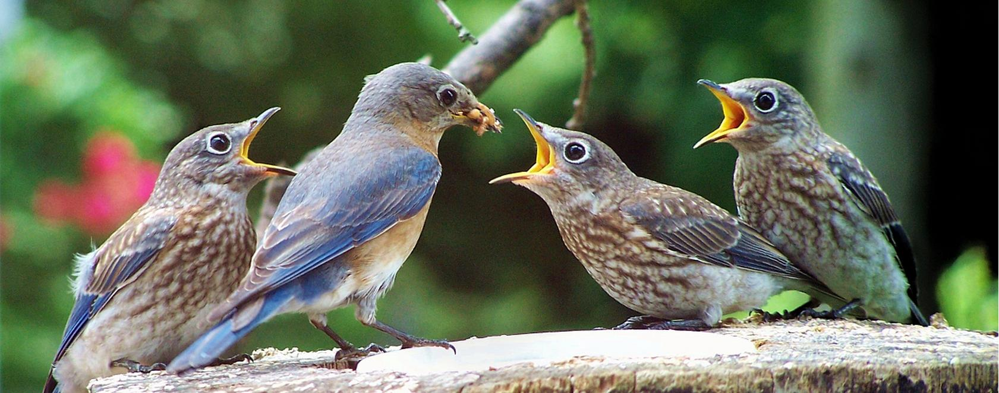

Bird Gender DNA Test
DNA identification service for bird gender analysis across companion birds and aviary populations. This page expands the workflow details, scope limitations, and best-practice use cases for organizations using avian DNA testing data.

When to Use This Service
Use this panel when you need reliable identification outputs for breeding logs, aviary inventory records, inter-facility transfers, and species-specific planning. Many clients combine this service with species pages such as parrot DNA test and canary DNA test.
Data Quality and Submission Requirements
- Each sample must include a unique specimen ID and species label.
- Use dry, contamination-aware packaging with one sample per envelope.
- Include service selection and contact details for report delivery.
Interpretation Scope
Reports provide laboratory testing outputs for identification and breeding support decisions. They are not intended as medical diagnosis or treatment instructions.
Related Services and Guides
Bird Species Identification · Avian Genetic Analysis · Bird Lineage Verification
How bird gender DNA test works · DNA testing for bird breeders · FAQ